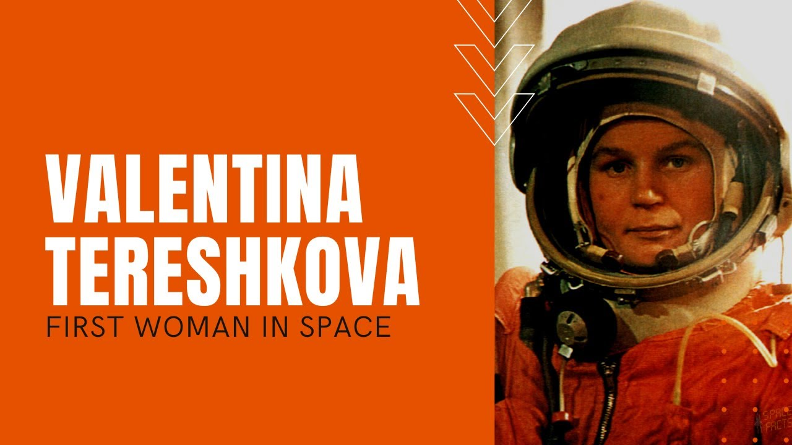
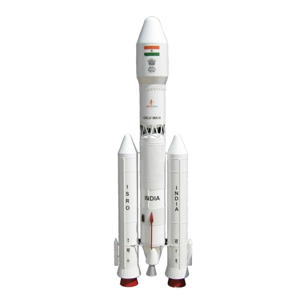
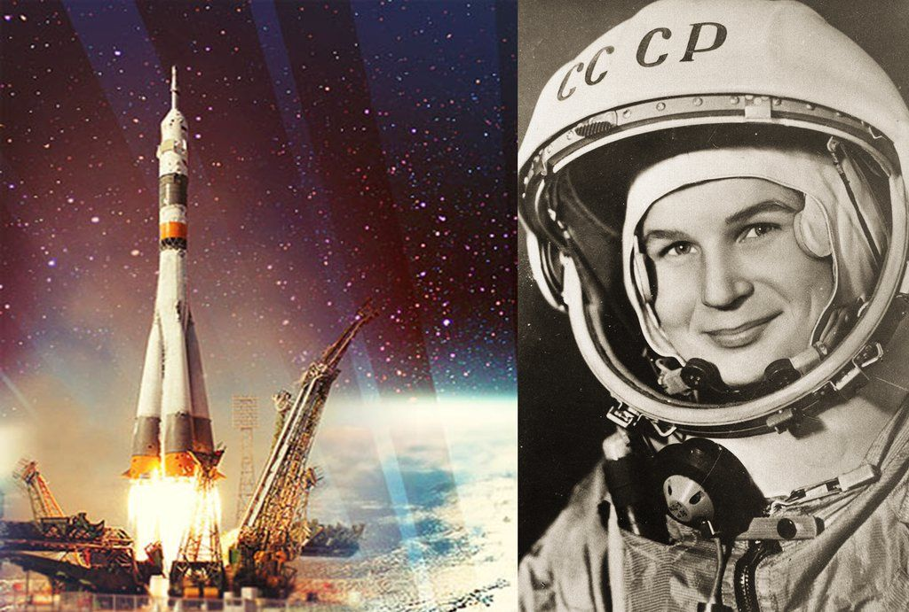
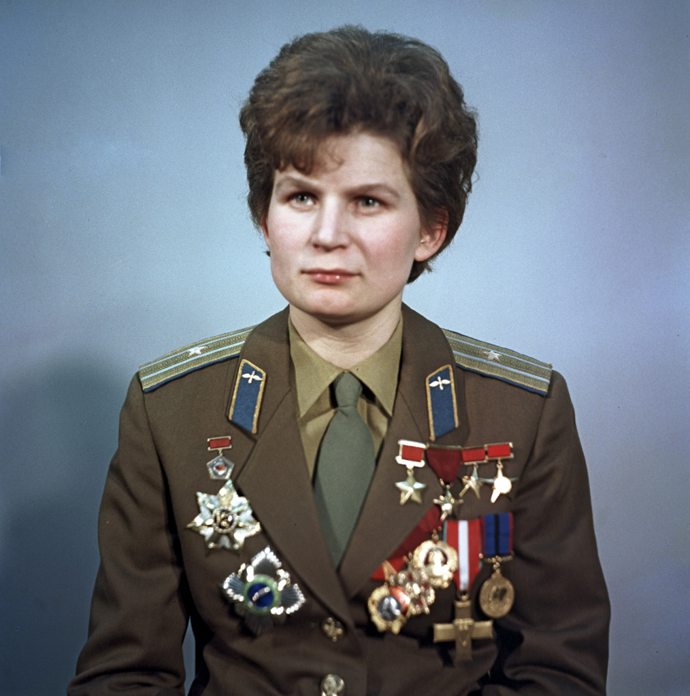
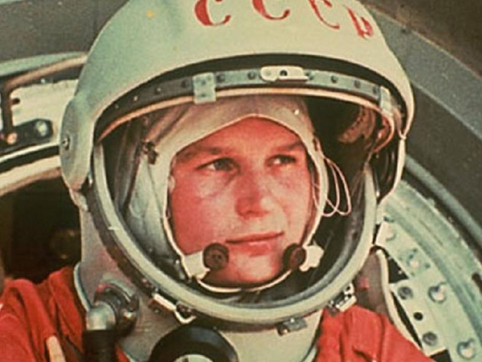

Welcome to the Space Journey!
Dive into the story of the first woman cosmonaut, discover amazing facts, view photos, and play a space game!



Dive into the story of the first woman cosmonaut, discover amazing facts, view photos, and play a space game!

Early Years: Tereshkova was born on March 6, 1937, in the village of Bolshoe Maslennikovo on the Volga River in Yaroslavl region. Her father was a tractor driver and sergeant in the Soviet Army. When the girl was only two years old, her father died during the Winter War in Finland. Her mother raised three children alone, working in the textile industry.
Education and Career Before Space: Valentina finished primary school at the age of 16. She then worked at a textile factory and plant, pursued correspondence education. Her main passion was parachuting — her experience with parachute jumps became a key factor in her selection as a cosmonaut. She made her first jump on May 21, 1959, at the age of 22.
Selection as Cosmonaut: In 1962, out of 400 candidates, she was selected along with four other women into the cosmonaut squad. She underwent rigorous training: centrifuge, isolation tests, water jumps, training on MiG-15 fighter jets. Her call sign during the flight was "Seagull".
Flight Date: On June 16, 1963, Tereshkova was launched into space on the Vostok-6 spacecraft. She became the first woman to make a space flight. Her call sign was "Seagull".
Flight Parameters: The flight lasted 2 days, 22 hours, and 50 minutes. During this time, she completed 48 orbits around Earth, traveling about 1.6 million km. At the time of the flight, Tereshkova was one of the youngest — she was only 26 years old. She remains the youngest woman to have flown in space!
Historical Fact: In one flight, Valentina spent more time in space than all American astronauts who flew before her combined! Her flight lasted longer than the flight of the first man in space, Yuri Gagarin.
Work in Space: During the flight, Valentina conducted scientific experiments, kept a diary of observations, photographed the Earth's horizon. She spoke with Soviet Premier Nikita Khrushchev over the radio. Although the woman experienced some discomfort and nausea, she successfully completed all mission tasks.
Return to Earth: She landed in Kazakhstan, 620 km northeast of Karaganda. During the parachute descent, she got a bruised nose due to strong winds but landed safely on the ground.
Tereshkova made 42 foreign visits between 1963 and 1970 — more than any other Soviet cosmonaut.




🎮 HOW TO PLAY:
✨ Controls: mouse/click on stars
✅ Goal: Collect all stars in 30 seconds
⚠️ Restriction: stars appear randomly, but not in corners and not close to each other
🎮 Game 2: Control the Rocket
Use arrows ← → to move the rocket along the X-axis and collect crystals
Each collected crystal +10 points